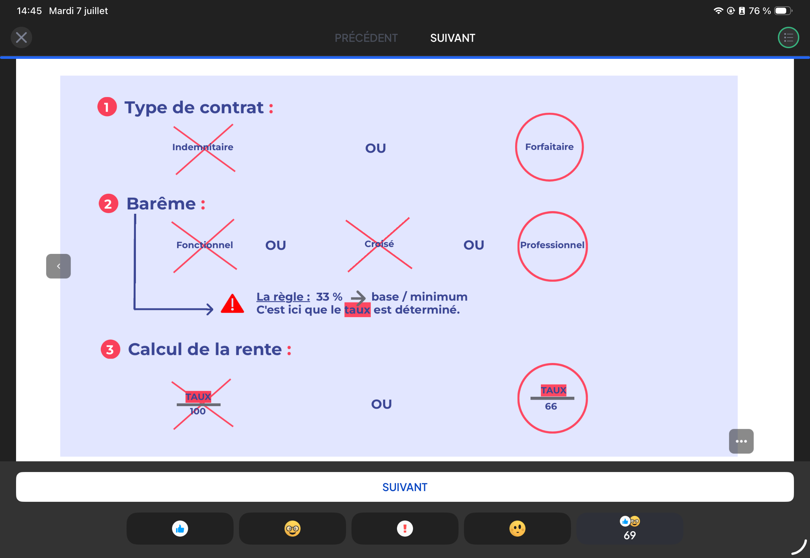

① Contrat FORFAITAIRE • ② Barème PROFESSIONNEL • ③ Calcul T/66 • ④ Seuil 16% • ⑤ PAS de reclassement professionnel Bonus : 2 lignes dans le contrat (pro + perso) pour dissocier la fiscalité
📈 Les régimes obligatoires des indépendants
Régime
Profession
Arrêt travail
Invalidité (80k€ revenus)
SSI
Artisans, commerçants, auto-entr.
J3 → J360 (~25%)
33,81€/j = 12 340€/an
CARMF
Médecins libéraux
J4→J90 (50%), J90→3ans (45%)
55,23€/j = 20 160€/an
CARCDSF
CGP, CIF, CGPI, experts-comptables
J4→J90 (50%), J90→3ans (45%)
76,83€/j = 28 044€/an
CARPIMKO
Kinés, infirmiers, orthophonistes
J4→J90 (50%), J90→3ans (25%)
27,62€/j = 10 080€/an
Aucun régime ne couvre convenablement ! Rentes à 12–35% du revenu. Il est impératif de compléter par une prévoyance privée.
📈 Pour l’indépendant : risques et conséquences
2 risques majeurs
Accidents • Maladies
3 conséquences
Arrêt de travail • Invalidité • Décès
Résultat
De lourdes difficultés financières (charges fixes continuent)
Évalue l’incapacité à exercer SA profession initiale
Le plus favorable
📈 Calcul du montant de la rente
Cas
Règle
Exemple (50% invalide, 50k€)
Taux ≥ 66%
Rente pleine (100% du montant souscrit)
50 000€/an
Taux < 66% — T/100
(taux/100) × montant souscrit
50/100 × 50 000 = 25 000€/an
Taux < 66% — T/66 ✓
(taux/66) × montant souscrit
50/66 × 50 000 = 37 900€/an
Gain T/66 vs T/100 : +12 900€/an pour la même cotisation. Le T/66 est le calcul à exiger.
📈 Le seuil de déclenchement de la rente
Seuil standard
33% : en dessous, aucune rente. Très insuffisant.
Impact à 33%
Perte d’1/3 du CA + charges fixes non réduites → ~50% du revenu net perdu
Impact à 24%
Pas de rente (< 33%) mais ~35% du revenu net perdu
Seuil optimal
16% ou moins. Déclencher la rente dès une faible invalidité.
Un assuré invalide à 24% sans rente perd quand même 35% de son revenu net. Le seuil de 33% est un piège.
📈 Les 5 clés pour une prévoyance optimale

#
Critère
À choisir
À éviter
1
Type de contrat
Forfaitaire ✓
Indemnitaire
2
Barème invalidity
Professionnel ✓
Fonctionnel / Croisé
3
Calcul de la rente
T/66 ✓
T/100
4
Seuil déclenchement
16% ✓
33%
5
Clause reclassement
PAS de clause ✓
Avec clause reclassement
Bonus : 2 lignes dans le contrat — Ligne 1 : garantie professionnelle (déductible revenus pros) • Ligne 2 : garantie personnelle (traitement fiscal distinct). Permet d’optimiser la fiscalité à l’IR.
📈 Les délais
Délai
Définition
Durée type
D’attente (carence)
Après souscription, avant prise d’effet des garanties
M. LEFEBVRE, kinésithérapeute libéral (CARPIMKO), a souscrit une rente d’invalidité de 60 000€/an. Suite à un accident, il est déclaré invalide à 45% (taux contractuel).
① Calcul avec règle T/100 ② Calcul avec règle T/66 ③ Différence en € ④ Quel calcul faut-il exiger ?
③ Différence : 40 909 − 27 000 = +13 909€/an avec le T/66, pour la même cotisation.
④ Conclusion : Exiger le calcul T/66. La différence est massive sur la durée de l’invalidité. À 45%, la CARPIMKO ne verse que 27,62€/j = 10 080€/an → la prévoyance complémentaire est indispensable.
Exercice n°2 Seuil de déclenchement · Impact financier
Mme SIMON, médecin libérale (CARMF), revenus 100 000€/an. Elle subit une invalidité professionnelle de 28%. Son contrat prévoyance a un seuil de déclenchement à 33%.
① Reçoit-elle une rente de son contrat ? ② Quel est l'impact réel sur son revenu net ? ③ Quel seuil aurait-il fallu viser ?
① Rente du contrat : 28% < 33% (seuil de déclenchement) → AUCUNE rente versée par le contrat prévoyance.
② Impact réel sur le revenu net : 28% d’incapacité professionnelle → perte d’environ 28% du CA. Mais charges fixes (loyer cabinet, assurances, crédits) restent → impact sur revenu NET ≈ 40% de perte. Sur 100 000€ → revenu net réduit de ~40 000€. Sans aucune rente.
③ Seuil optimal : Un seuil à 16% aurait déclenché la rente dès 16% d’invalidité → Mme SIMON aurait été indemnisée dès le début. Toujours chercher le seuil le plus bas possible.
Exercice n°3 Comparer 2 contrats · Choisir le meilleur
M. DUBOIS, artisan maçon (SSI), revenus 70 000€/an. Il compare deux contrats prévoyance, même cotisation mensuelle : • Contrat A : Indemnitaire + Barème fonctionnel + T/100 + Seuil 33% • Contrat B : Forfaitaire + Barème professionnel + T/66 + Seuil 16% Il souscrit une rente de 50 000€/an. Il tombe invalide à 40% (barème professionnel) ou 20% (barème fonctionnel).
① Rente versée par le Contrat A ② Rente versée par le Contrat B ③ Quel contrat recommander ?
① Contrat A (indemnitaire, fonctionnel, T/100, seuil 33%) : Barème fonctionnel → taux = 20% (corps évalué, pas la profession de maçon). 20% < 33% (seuil) → AUCUNE rente versée.
② Contrat B (forfaitaire, professionnel, T/66, seuil 16%) : Barème professionnel → taux = 40% (maçon ne peut plus porter des charges). 40% > 16% (seuil) → rente déclenchée. T/66 : (40/66) × 50 000 = 60,6% × 50 000 = 30 300€/an. + Forfaitaire : 30 300€ versés indépendamment de la perte prouvée.
③ Conclusion : Contrat A : 0€. Contrat B : 30 300€/an. Même cotisation. → Le Contrat B illustre parfaitement les 5 clés d’une prévoyance optimale.
Cas n°1 Diagnostic prévoyance · CARPIMKO
Mme ROUX, infirmière libérale, 38 ans, revenus 65 000€/an. Elle souscrit un contrat prévoyance indemnitaire avec barème fonctionnel, T/100, seuil 33%, rente 40 000€/an. Vous êtes son CGP. Après analyse, elle est victime d'un burn-out professionnel sévère et déclarée invalide à 30% (barème fonctionnel).
⚠ Pièges : seuil 33%, exclusion psychique possible, barème fonctionnel défavorable pour une infirmière.
Analyse du contrat de Mme ROUX :
1. Exclusion psychique : Burn-out = affection psychique. Si le contrat l’exclut → aucune indemnisation du tout. À vérifier en priorité.
2. Seuil 33% : 30% < 33% → même si le burn-out est couvert, aucune rente d’invalidité versée.
3. Barème fonctionnel : Le burn-out avec 30% fonctionnel n’empêche peut-être pas de marcher, mais empêche d’exercer comme infirmière. Un barème professionnel aurait peut-être donné 50%.
4. Conclusion pour le conseiller : Ce contrat est inadapté. À la prochaine échéance, recommander :
→ Vérifier couverture psychique ITT et invalidité permanente
→ Seuil 16% • Barème professionnel • T/66 • Forfaitaire
Cas n°2 Reclassement professionnel · Chirurgien
Dr LAMBERT, chirurgien orthopédique, revenus 250 000€/an. Il souscrit un contrat prévoyance avec une clause de reclassement professionnel. Suite à un tremblement essentiel, il ne peut plus opérer. Son assureur estime qu'il peut encore exercer comme médecin consultant et décide d'arrêter les prestations.
⚠ Piège : la clause de reclassement permet à l'assureur de stopper les versements si une activité alternative est possible, même très différente.
Analyse :
Avec clause de reclassement professionnel :
L’assureur : "Vous pouvez être consultant médical" → les prestations s’arrêtent.
Or Dr Lambert gagnait 250k€/an en chirurgie. Consultant = revenu bien inférieur.
Sans clause de reclassement (barème professionnel) :
L’invalidité est évaluée par rapport à SA profession de chirurgien.
Tremblements = 100% invalide pour la chirurgie → rente pleine maintenue jusqu’à la retraite.
Conseil :
Pour les professions qualifiées et spécialisées, la clause de reclassement est particulièrement dangereuse.
→ Toujours exiger : PAS de clause de reclassement + barème professionnel + contrat spécifique à la chirurgie.
Cas n°3 Optimisation fiscale · 2 lignes
M. MERCIER, CGP indépendant (CARCDSF), TMI 30%, revenus 90 000€/an. Il veut souscrire une prévoyance avec une rente de 60 000€/an. Son assureur lui propose 2 options : • Option 1 : 1 seul contrat (toute la cotisation déduite des revenus professionnels) • Option 2 : 2 lignes dans le contrat (pro + perso)
⚠ Point clé : avec 1 seule ligne, toute la rente perçue sera imposable comme revenu professionnel. Avec 2 lignes, on peut optimiser.
Option 1 (1 ligne, tout professionnel) :
Cotisation déductible intégralement des revenus professionnels (économie IR 30%).
Rente perçue : 100% imposable comme revenu professionnel (TMI applicable à la retraite).
Option 2 (2 lignes) :
Ligne 1 (pro) : cotisation déduite des revenus pros → rente imposable en revenus professionnels.
Ligne 2 (perso) : cotisation déduite du revenu global → rente bénéficiant d’un traitement fiscal différent (potentiellement plus favorable selon la situation à la liquidation).
Avantage :
La séparation permet d’adapter la fiscalité selon l’évolution des revenus et du TMI.
→ Recommander l’Option 2 systématiquement pour optimiser la situation fiscale au moment du sinistre.